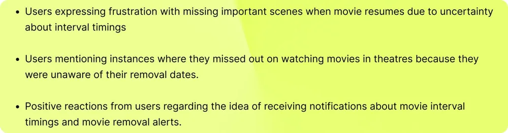
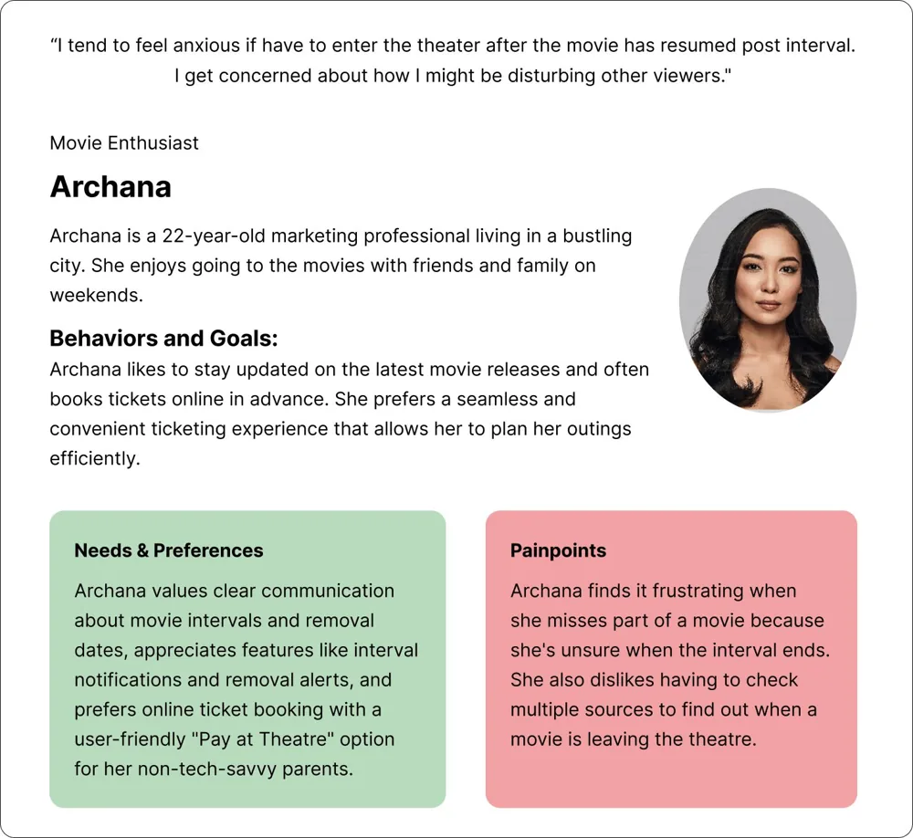
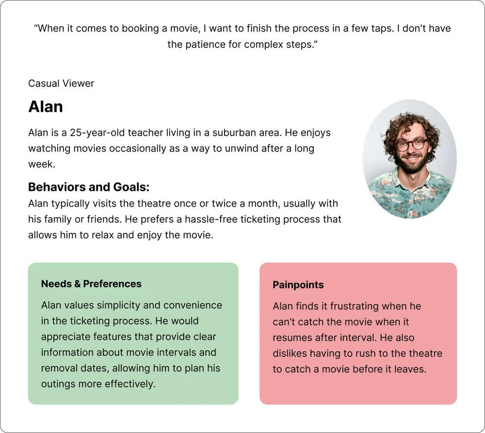
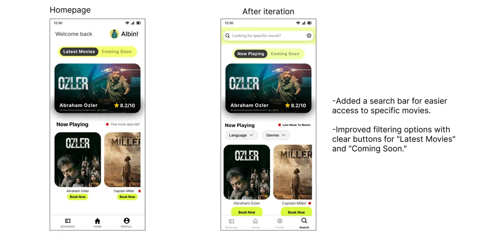
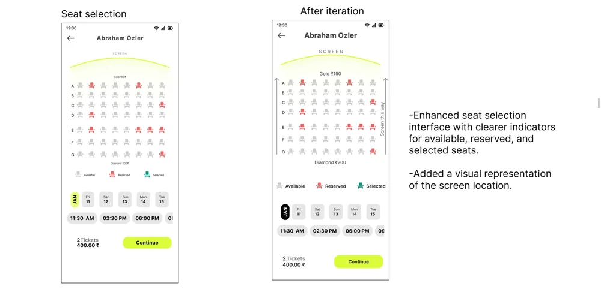
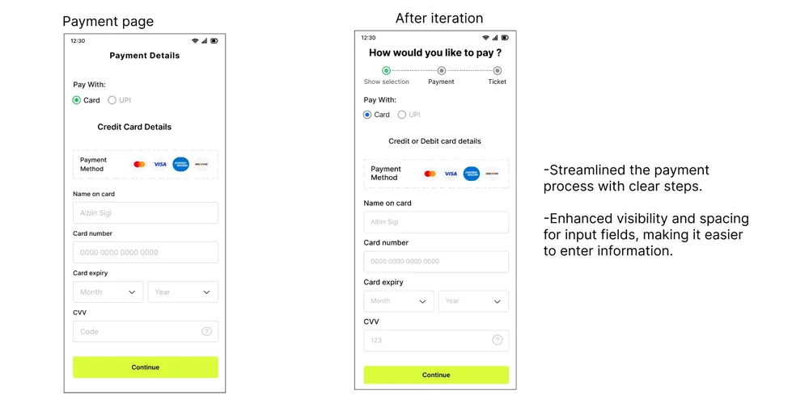
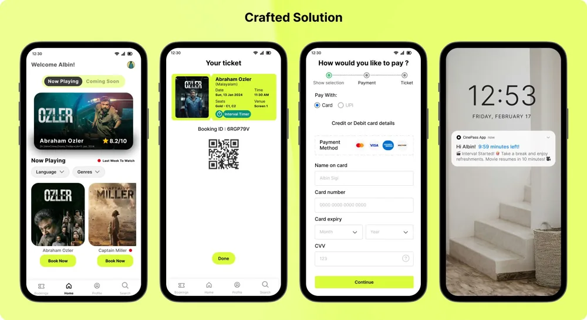

Case study 04 · Mobile app · Personal project
From browse to booked. A faster, friendlier cinema ticketing experience.
In 30 seconds
- The problem: Moviegoers never know when the interval ends, and they miss films because nobody tells them when shows leave theatres.
- What I did: Designed CinePass, a ticketing app for a local theatre, with interval timers and show removal alerts. Interviewed 5 people, tested with 5 more, iterated.
- The result: A complete, user-tested app design that fixes two problems the big platforms ignore.
The starting point
I love going to the movies, and two things kept ruining it. I never knew when the interval would end, so snack runs became a gamble. And films kept disappearing from theatres before I got around to watching them, with no warning at all.
CinePass is a ticket booking app I designed for a theatre near my hometown, where the crowd is passionate about films. It fixes those two problems directly: clear interval notifications and alerts before a show leaves the theatre.
Checking my assumptions
Before designing anything, I interviewed five people: two theatre enthusiasts and three casual viewers. I wanted to know whether my frustrations were mine alone or shared. They were shared. Most participants had faced the same two problems, which validated the idea.
The questions covered how they book, what influences their decision to go, whether they had missed interval endings or removal dates, and what would improve their experience.



Learning from the competition
I analysed BookMyShow and PVR Cinemas, the two biggest ticketing platforms in India. Both handle booking well. Neither tells you when the interval ends or warns you before a film leaves theatres. That gap became the core of CinePass.
The questions that guided the design
- How might we help people plan their theatre visit with accurate interval and showtime information?
- How might we make buying a ticket faster and less frustrating?
- How might we make the app easy for everyone, including people who are not comfortable with technology?
Testing with real users
I built wireframes, then took the high-fidelity designs to five participants for usability testing. Two clear findings came back:
- Seat selection: people were confused about where the screen was relative to the seats.
- Homepage: people wanted search and filters, and the label "few more days left" was unclear.
I fixed all three: a clearer screen indicator on the seat map, search and filter options on the homepage, and plain wording for removal dates.



The final design
A minimalist booking flow with the two signature features built in: an interval timer notification during screenings, and alerts when a film you want to see is about to leave the theatre.

What I learned
This project taught me the full process end to end: research, personas, competitive analysis, wireframes, testing and iteration. The biggest lesson was how much user testing changes the design. All the significant improvements came from watching five people use it, not from my own judgment.
I designed this project as part of my Google UX certification in 2024.